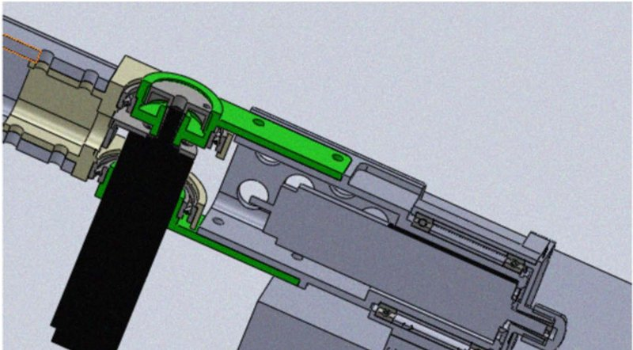

Academic bedside robots · bitujn_vir_zhao2011
BIT-Jinan VIR
BIT / University of Jinan tele-operated vascular interventional robot: 5-DOF active supporting manipulator (ASMM) carrying a 2-DOF catheter operating system


- Family
- Academic bedside robots (academic)
- Devices
- catheter (and guide wire) clamped in the catheter operating system carried at the tip of the supporting manipulator; one catheter at a time, sizes N.R. (zhao2011_teleoperating Sec. II, III; wang2011_masterslave Sec. II-B)
- Degrees of freedom
- 7 = 5 (active supporting manipulator: joints 1-3 position, joints 4-5 pose) + 2 (catheter: axial advance and rotation); seven DC motors on a PC + PMAC controller (zhao2011_teleoperating Sec. III, IV, V; wang2011_masterslave Sec. III)
- Push
- Other drives
- Twist
- Other
- Tested up to
- Phantom
- Sim-to-real
- None found — No simulation-trained controller found for this robot.
Testing
- Highest level
- Phantom
- What was tested
- bench: catheter advance, 10 commanded distances from 10 to 100 mm, real distance measured three times each (zhao2011_teleoperating Sec. VI-B, Table 1); supporting manipulator: absolute positioning at 20 random preset points measured on a three-coordinate machine (wang2011_masterslave Sec. V-A); 3D reconstruction of a glass model, 5 branch diameters (Sec. V-B, Table I); phantom: surgeons drove the catheter forward, backward and in rotation through the branches of a transparent glass vascular model from the haptic master with the supporting manipulator holding the navigator (wang2011_masterslave Sec. V-C, Fig. 15; zhao2011_teleoperating Fig. 15); number of runs N.R.; no animal or human test
- Key numbers
- advance error against the command 3.34 to 6.0 % (column r, Table 1), coder feedback against the measured distance 0.47 to 0.84 %, 'smaller than 1 %' (column f); supporting manipulator max error < 0.8 mm over 20 points (wang2011_masterslave Sec. V-A); reconstructed branch diameter error -0.018 to 0.878 mm, 'smaller than 1 mm' (Table I); safety: software distance to the groin incision > 40 mm, 50 ms PMAC watchdog, fuses, brakes, hall limit switches, binocular vision, emergency stop (zhao2011_teleoperating Sec. V-C)
Mechanism
- Push (translation)
- other: trolley advance, the catheter is clipped by two trolleys (one driven, one passive) on the advance unit, driven by an advance motor; a photoelectric coder on the passive trolley measures the distance (zhao2011_teleoperating Sec. III-A, Fig. 5)
- Twist (rotation)
- gear transmission: the advance and detecting units sit on a rotating unit driven by a rotating motor (zhao2011_teleoperating Sec. III-A, Fig. 5)
- Device range
- advance tested over 10 to 100 mm in ten commanded distances (zhao2011_teleoperating Table 1); device diameters N.R.
- Target anatomy
- 'vascular interventional surgery' (VIS) for cardiovascular and cerebrovascular disease under fluoroscopy (Abstract); coronary dilatation, aneurysm treatment and local chemotherapy named as VIS uses (zhao2011_teleoperating Sec. II) and intravascular neurosurgery as the delicate case (Sec. I); tested in a transparent glass vascular model with five branches, no organ named (wang2011_masterslave Sec. V-B, V-C)
Sensing and interface
- Force sensing
- none: contact force on the vessel is named as a problem and force feedback as future work (zhao2011_teleoperating Sec. I, VII)
- Leader and haptics
- haptic interface device at the master site, in a radiation-proof room, with 2D projection images and a 3D reconstructed vascular model on two displays; its force feedback N.R. (wang2011_masterslave Sec. II-A, IV, V-C); tele-operation over TCP/IP (zhao2011_teleoperating Sec. III-B, Fig. 6)
- Imaging
- DSA / X-ray: DSA calibrated by the Tsai method and two projections reconstructed in 3D (wang2011_masterslave Sec. IV-B); binocular vision guides the manipulator (Sec. II-A); robot materials N.R.
- Sterility
- N.R.; 'easiness of sterilization' is one of five stated design points for the driving unit (zhao2011_teleoperating Sec. III-A)
Size
- Footprint (mm)
- N.R.
- Mass (kg)
- about 4 (catheter navigator only, the load of the supporting manipulator) (wang2011_masterslave Sec. II-B, III-B)
Simulation
- Simulation model
- none found (kinematic analysis and quintic-polynomial trajectory planning of the arm, zhao2011_teleoperating Sec. VI-A)
- Sim-trained controller
- none found
Versions
- Lineage
- 2011 ICMA (zhao2011_teleoperating, full): system overview, 2-DOF catheter driving unit, 5-DOF supporting manipulator, safety design, advance precision test; 2011 ROBIO (wang2011_masterslave, full, Wang, Duan et al.): ASMM structure synthesis, DSA calibration and 3D reconstruction, master-slave control with a haptic interface, glass vascular model experiment; 2011 ICCME (zhao2011_mechanical): the earlier mechanical design and control paper, judged arm-only in the first REV4 pass (REV4_19_candidates.md §1 row 4) and not re-read
Sources
- A New Tele-operating Vascular Interventional Robot for Medical Applications · 2011 IEEE International Conference on Mechatronics and Automation, 2011 · doi:10.1109/ICMA.2011.5986252 [zhao2011_teleoperating]
- Structure Design and Master-slave Control System of a Vascular Interventional Robot · 2011 IEEE International Conference on Robotics and Biomimetics (ROBIO), 2011 · doi:10.1109/ROBIO.2011.6181294 [wang2011_masterslave]
- Mechanical design and control system of vascular interventional robot · The 2011 IEEE/ICME International Conference on Complex Medical Engineering, 2011 · doi:10.1109/iccme.2011.5876765 [zhao2011_mechanical]
Notes
- Notes
- REV4 2026-11-23: included after the full assessment of the 19 candidates (REV4_19_candidates.md §7). Decided A after the ICMA paper showed a measured catheter-advance test and the ROBIO paper a catheter run in a glass vascular model; the earlier 'arm only' reading (criterion 4) came from the ICCME paper. Table 1 of the ICMA paper: the coordinator's note gave 4.1-6.0 %, the column r runs 3.34-6.0 %. The ROBIO PDF has a shifted text layer (decoded by the coordinator); digits were stripped there, the values quoted come from a re-decode of the PDF text layer. Separate robot from ujn_cao2024 (a different University of Jinan group paper, 2024).
This record
- Read level
- full
- Picture
- zhao2011_mechanical (ICCME 2011) Fig. 11 (render of the catheter navigator, joints 4-5) ↗ — licence: publisher copyright (IEEE); grade B
- Picture changes
- native extract (1344x928); figure caption and frame cropped; not upscaled; the arm photo (Fig. 12) has numbered joint markers on the robot
- Found by
- gap: Gap searches for robots the other searches missed.
- Data
- JSON · YAML:
records/robots/bitujn_vir_zhao2011.yaml - Correction
- Suggest a correction [repository not created yet]